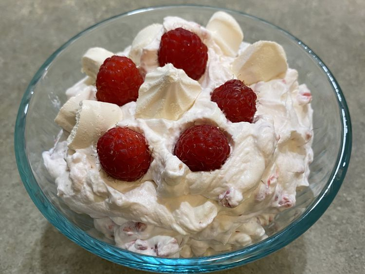

Eton Mess

Eton mess is a classic British dessert made of a "messy" mixture of crushed meringue, whipped cream, and fresh strawberries. Traditionally served at Eton College, it’s loved for its simple balance of crunchy, creamy, and fruity textures.
Ingredients:
- 1 cup heavy cream
- 4 store-bought meringue cookies
- 12 ounces ripe raspberries
Directions:
- Beat cream in a chilled glass or metal bowl with an electric mixer until soft peaks form.
- Break meringue cookies into bite-sized chunks and add to whipped cream; fold in berries lightly with a metal spoon until you see streaks of dark pink but still retain some chunks of meringue.
- Spoon Eton mess into four glass dishes and serve.
Home